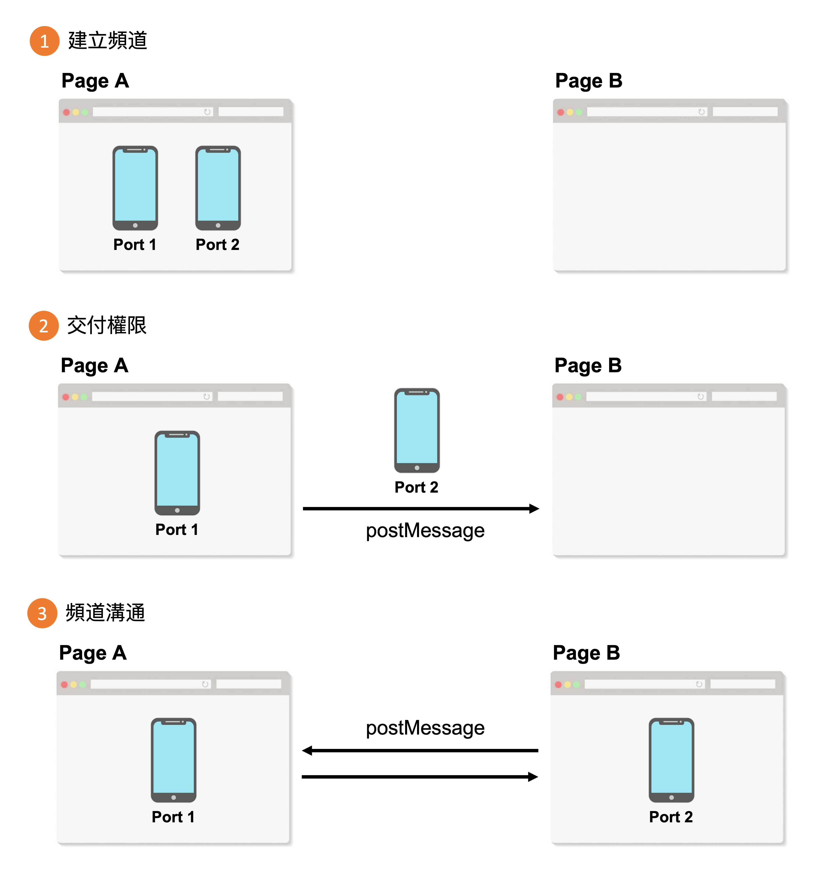

那些被忽略但很好用的 Web API / MessageChannel
Posted by Max on
熱線你和我，這是一條情感的線路，屬於你和我。
昨天我們認識了 PostMessage，它可以讓我們在兩個頁面之間傳遞訊息，只要有地址(Domain Origin)，就可以送信給對方，而對方只要有收信的機制就能夠獲得訊息，甚至可以回信。但這有個壞處，也就是當我們建立了收信機制後，可能會有來自四面八方的訊息寄過來，那就必須要做一個過濾的動作。但今天的 MessageChannel 卻可以解決這個問題。
有些 Package 或 Library 有可能會使用 PostMessage 在你的網頁文件中執行訊息傳遞，這些訊息也是需要過濾的。
MessageChannel
MessageChannel 就像是在兩個頁面中建立一個熱線系統，這樣就不會再那些不想收到訊息，只有綁定的雙方可以透過 MessageChannel 來進行溝通，就像是一個專屬的頻道。如果以圖像來表示整個頻道建立的過程的話，會像是下圖這樣：
# 建立頻道
先來看第一步「建立頻道」，MessageChannel 本身是一個 Class，所以我們用關鍵字 new 來創建一個新的 MessageChannel 物件，就這麼簡單明瞭，而且也不需要傳入任何參數。
const msgChannel = new MessageChannel();而當 MessageChannel 建立後，它底下就會有兩個唯讀屬性可以取得，分別是 port1 和 port2，也就是圖片中的兩部手機：
console.log(msgChannel.port1);
console.log(msgChannel.port2);# 交付權限
在建立頻道之後，目前兩部手機(Port)都還是由目前的頁面所掌控，我們需要將其中一部手機(Port)傳遞給我們想建立通訊的另一個頁面中。
<!-- 這裡是 pageA.html -->
<iframe src="pageB.html" width="480" height="320"></iframe>
<script>
let messagePort;
const iframe = document.querySelector("iframe");
iframe.addEventListener("load", function () {
// 建立頻道，並取得 port1、port2
const { port1, port2 } = new MessageChannel();
// 將 port1 存在全域變數中
messagePort = port1;
// 將 port2 送給 pageB
const msg = "這是 pageA 送來的手機";
iframe.contentWindow.postMessage(msg, location.origin, [port2]);
});
</script>雖然已經建立了 MessageChannel，但「送手機」的這一步還是要靠一般的方式送過去，而手機(Port)的部分必須放在之前介紹 postMessage 時沒說的第三個參數中：
- transfer： 這個參數必須是一個陣列，當中要放的是由 MessageChannel 所產生的
port，藉此產生兩個頁面的訊息通道。
再來，pageA 還需要先做好準備，才不會漏接了 pageB 傳過來的訊息，也就是要監聽 message 事件，但是這次不再是用 window 監聽了，而是使用 port1.onmessage:
<!-- 這裡是 pageA.html -->
<iframe src="pageB.html" width="480" height="320"></iframe>
<script>
let messagePort;
const iframe = document.querySelector("iframe");
iframe.addEventListener("load", function () {
const { port1, port2 } = new MessageChannel();
messagePort = port1;
// 用 port1 監聽 message 事件
messagePort.onmessage = function (event) {
console.log(event.data);
};
const msg = "這是 pageA 送來的手機";
iframe.contentWindow.postMessage(msg, location.origin, [port2]);
});
</script>再來就是要在 pageB 接收這個「寄送手機」的信息，只要在傳送端有在 postMessage 放入 transfer 這個參數，接收端就可以在 Event 物件中的 ports 屬性取得「這部手機」。
在收到這部手機(Port)後，我們可以先存起來，然後為它建立事件，以便未來在頻道中收到 pageA 時才會對應的操作。除此之外，我們還可以順勢用這部手機馬上打回去，跟 pageA 說我們已經拿到手機(Port)了。
<!-- 這裡是 pageB.html -->
<div class="output">default content</div>
<script>
let messagePort;
const output = document.querySelector(".output");
window.addEventListener("message", function (event) {
if (!event.ports || !event.ports.length) return;
// 將訊息文字顯示在頁面上
output.innerHTML = event.data;
// 將 port2 存在全域變數中
messagePort = event.ports[0];
// 用 port2 監聽 message 事件
messagePort.onmessage = function (port_event) {
output.innerHTML = port_event.data;
};
// 用 port2 送出訊息
messagePort.postMessage("收到手機囉！");
});
</script># 頻道溝通
前面我們已經把前置作業全部都完善了，包括建立頻道、傳送埠口(Port)、事件監聽，接下來我們就可以享受信息暢通的專屬熱線了：
<!-- 這裡是 pageA.html -->
<button onclick="sendMessage()">send message</button>
<iframe src="pageB.html" width="480" height="320"></iframe>
<script>
let messagePort;
// ... 省略其他 code
function sendMessage() {
messagePort.postMessage("來自 pageA 的訊息");
}
</script><!-- 這裡是 pageB.html -->
<button onclick="sendMessage()">send message</button>
<div class="output">default content</div>
<script>
let messagePort;
// ... 省略其他 code
function sendMessage() {
messagePort.postMessage("來自 pageB 的訊息");
}
</script>是不是對 PostMessage 又有新的一層認識呢？但你以為就只有這樣嗎？其實明天還會介紹 BroadcastChannel，除了可以建立專屬熱線之外，還可以建立廣播系統！
- 此篇文章為「iT 邦幫忙鐵人賽」參賽文章，同步發表於 iT 邦幫忙 -